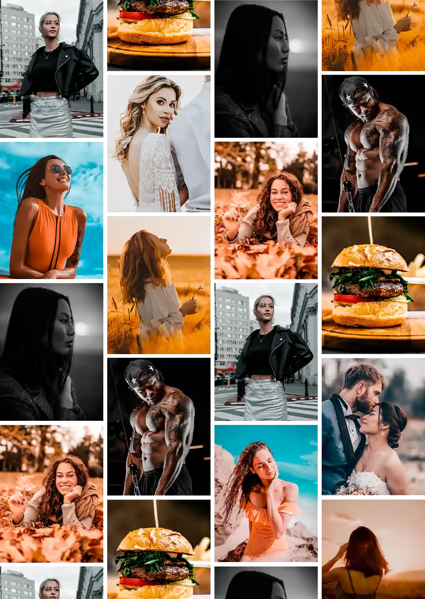

Los presets son ediciones listas creadas por profesionales, que funcionan en el celular, ya sea Android o iPhone.

+150 ediciones profesionales para transformar tus fotos con un solo clic
Edita tus fotos en el celular en segundos con nuestros presets, sin experiencia y sin programas de pago
Quiero transformar mis fotos